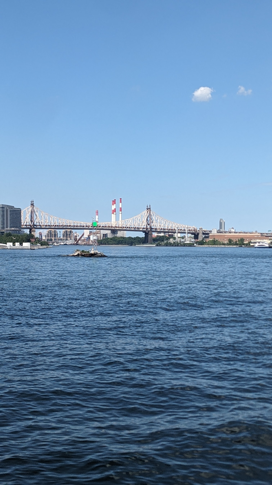
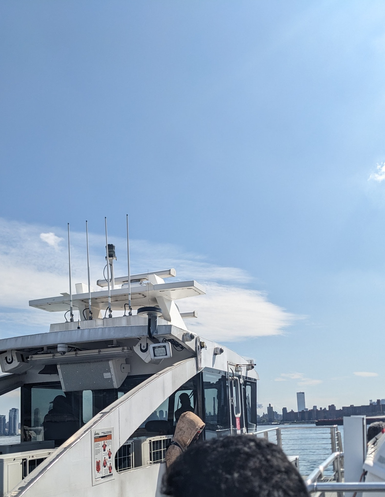
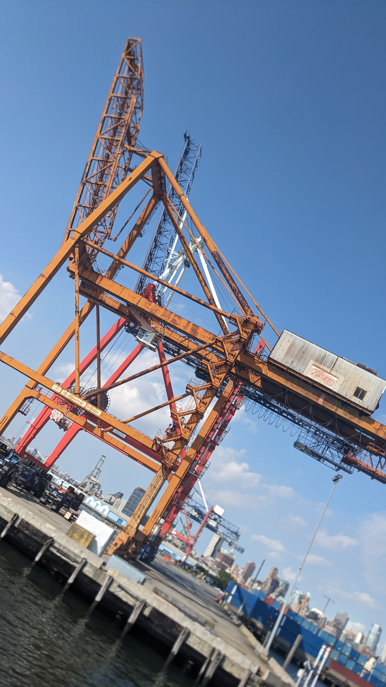
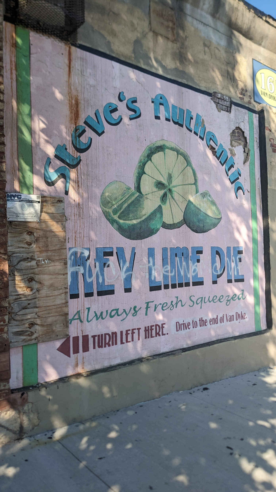
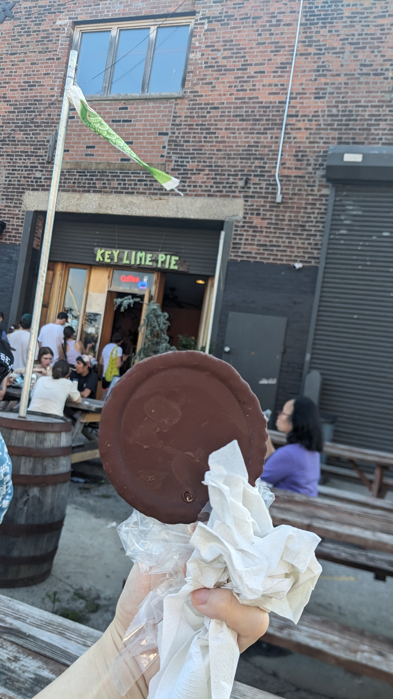
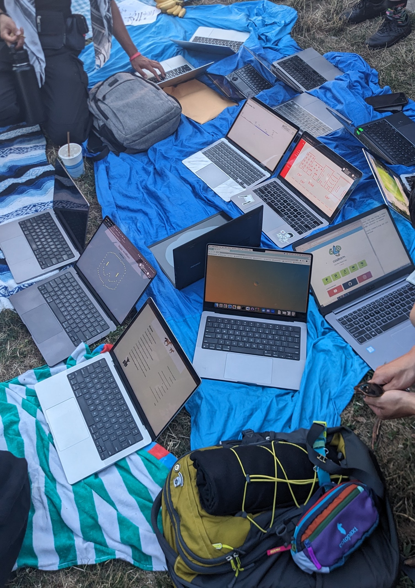

how i'm feeling now (about html)
first I walked
then I ran along the water 
I took a ferry  from E 90th to Wall Street to Red Hook
I took a picture of the shipping container on the ferry docks

and sent it to my
then I went to Steve's Authentic Key Lime Pie  and got a classic swingle 
I met so many new people. Coming from far and near, they were all orbs  of inspiration.